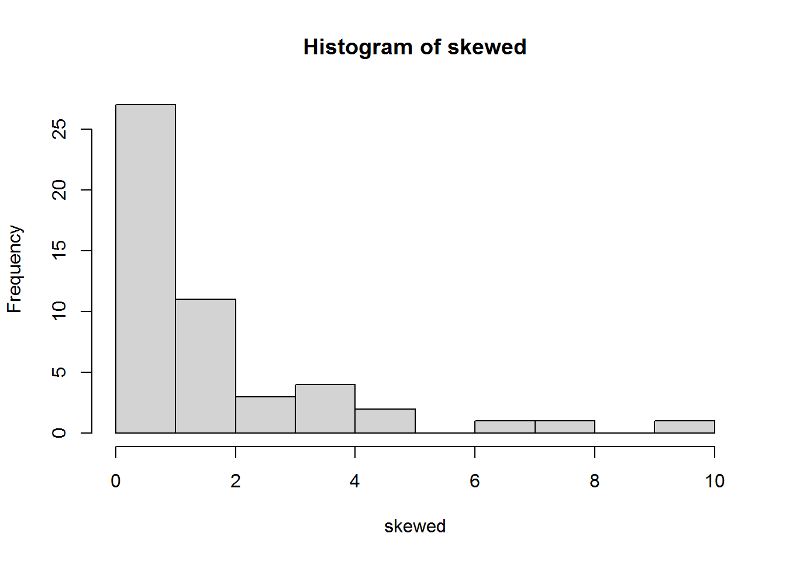
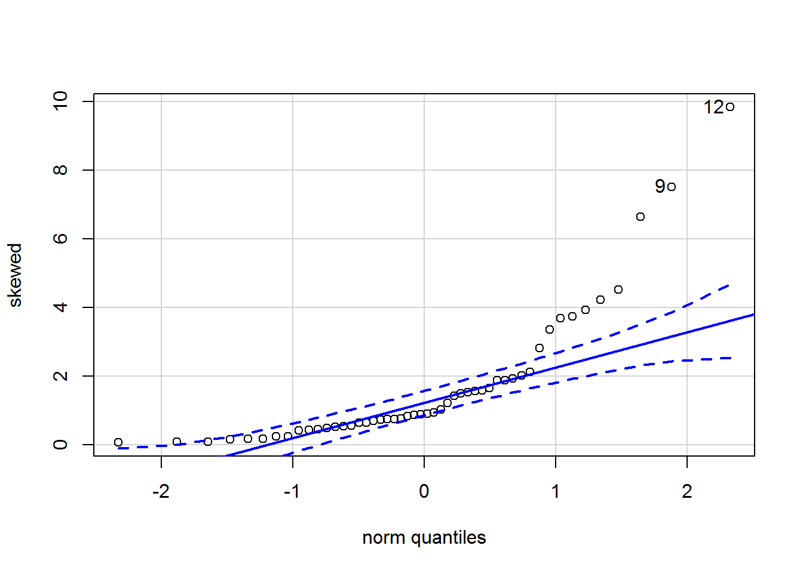
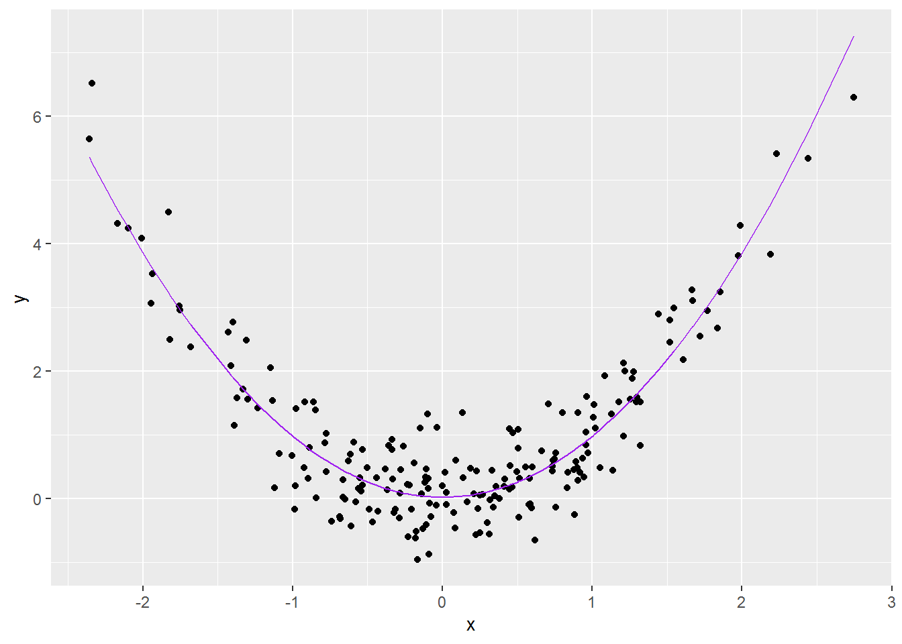
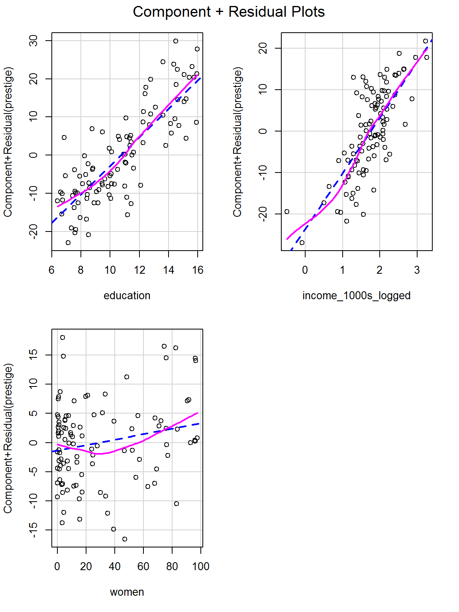

Chapter 6 Linear regression diagnostics
A cursory glance at Chapter 8 of Fox and Weisberg (2019) will reveal that there are many diagnostic checks for regression models. An oft-cited book on diagnostics by Belsey et al. (1980) runs to 300 pages.
There is an element of subjectivity in deciding which checks to use and how to interpret them, and hence a chance that authors cherry pick diagnostics to make it appear that a model explains the data better than it actually does. So, as ever, it is important to create an analysis plan before seeing data, ideally registered in some way online.
By the end of this chapter you will know how to carry out common diagnostic checks of regression models using R. Many of the ideas transfer with little effort to other models we will encounter later too.
I recommend that you follow along with the examples, fiddling with the code as your curiosity guides you (don’t simply copy and paste code and run it – play!). The tutorial ends with an activity, similar to the sorts of things that have been asked in exams.
6.1 Before we begin
You could continue on the end of last week’s Markdown file or make a new one. We will be using the same prestige.csv dataset, so whatever you do please ensure the data is saved in the same folder as your Markdown file.
Ensure these handy packages are installed and included:
library(car)
library(tidyverse)6.2 The dataset
So it’s easy to find, here are the variable names again. Each row describes an occupation and aggregated data about that occupation.
| Variable name | Description |
|---|---|
| occ | Occupation |
| education | Average years of education for people in the job |
| income | Average income in dollars |
| women | Percentage of women in occupation |
| prestige | A Pineo-Porter prestige score for the occupation with a possible range of 0-100 (higher = more prestigious) |
| type | “bc” = blue collar “wc” = white collar “prof” = professional, managerial, or technical |
Read it in:
dat <- read.csv("prestige.csv")I’m going to mutate this to add the income in $1000s again.
dat <- dat %>%
mutate(income_1000s = income/1000)6.3 Fit a regression model
We will spend some time exploring this simple two-predictor model, so ensure it exists in the environment:
mod_both <- lm(prestige ~ education + income_1000s,
data = dat)
summary(mod_both)##
## Call:
## lm(formula = prestige ~ education + income_1000s, data = dat)
##
## Residuals:
## Min 1Q Median 3Q Max
## -19.4040 -5.3308 0.0154 4.9803 17.6889
##
## Coefficients:
## Estimate Std. Error t value Pr(>|t|)
## (Intercept) -6.8478 3.2190 -2.127 0.0359 *
## education 4.1374 0.3489 11.858 < 2e-16 ***
## income_1000s 1.3612 0.2242 6.071 2.36e-08 ***
## ---
## Signif. codes: 0 '***' 0.001 '**' 0.01 '*' 0.05 '.' 0.1 ' ' 1
##
## Residual standard error: 7.81 on 99 degrees of freedom
## Multiple R-squared: 0.798, Adjusted R-squared: 0.7939
## F-statistic: 195.6 on 2 and 99 DF, p-value: < 2.2e-166.3.1 Activity
How should the coefficients be interpreted?
6.3.2 Answer
Both education and income are statistically significant predictors of prestige (both p’s < .001). Each year of education is associated with 4.1 more prestige points and $1000 more income is associated with 1.4 extra prestige points (whilst holding other predictors constant). The model explains 79% of the variance in prestige and, perhaps unsurprisingly with that high an \(R^2\), is statistically significantly better than the intercept-only model, \(F(2,99) = 195.6\), \(p < .001\).
Note how that model test is included in the last line of the model summary; we can also check it explicitly with:
mod0 <- lm(prestige ~ 1, data = dat)
anova(mod0, mod_both)## Analysis of Variance Table
##
## Model 1: prestige ~ 1
## Model 2: prestige ~ education + income_1000s
## Res.Df RSS Df Sum of Sq F Pr(>F)
## 1 101 29895.4
## 2 99 6038.9 2 23857 195.55 < 2.2e-16 ***
## ---
## Signif. codes: 0 '***' 0.001 '**' 0.01 '*' 0.05 '.' 0.1 ' ' 16.4 Checking for normally distributed residuals
To obtain the residuals for a model, use the command resid and save them somewhere. I will add them onto the dat data frame so that it is easy to cross reference each residual with the original data:
dat$mod_both_resids <- resid(mod_both)These should have a normal, also known as a Gaussian distribution, in linear regression models. How do we check…?
6.4.1 Base R histogram
One way is to have a look at a histogram using the base R hist function:
hist(dat$mod_both_resids)
Is that a normal distribution? Probably, yes; however, in general ¯\_(ツ)_/¯, it is not always obvious. There are better ways to check – read on!
6.4.2 Quantile-comparison plot
An easier way to check the distribution is using a quantile-comparison plot, also known as a quantile-quantile or Q-Q plot. The car package, associated with the Fox and Weisberg (2019) textbook, has a lovely function for creating them called qqPlot:
qqPlot(dat$mod_both_resids, id = list(labels = dat$occ, n = 2))## newsboys farmers
## 53 67By default it always labels the two most extreme values and tells you what rows they are on. I have added the n parameter explicitly with the default value of 2 so that you can play around with it. I also used the id parameter to tell the function the names of the occupations. (Leave it out to see what happens.)
The residuals are on the y-axis and the theoretically expected quantiles on a standard (mean = 0, SD = 1) normal distribution are on the x-axis. If the data we provide are identical to the normal distribution, then the points should fall along the blue diagonal line. By default, a 95% confidence envelope is drawn on (the dashed curves); around 95% of the points should be within this envelope if the data we provide has the same distribution as the comparison distribution. Too many outside this suggests deviation from the reference distribution.
The residuals do indeed seem normally distributed. Read on to see what a Q-Q plot looks like when data are not normally distributed…
6.4.2.1 Illustration using simulated data
Let’s try a Q-Q plot for a skewed distribution which is definitely not normally distributed:
set.seed(42) # this line means you get the same (pseudo)random numbers as me
skewed <- exp(rnorm(50))
hist(skewed)
Here is the qqPlot:
qqPlot(skewed)
## [1] 12 9The points do not all lie on the diagonal; indeed there is marked curvature.
Now, a sample we know to be normally distributed and large (2500 “participants”) so it will be easy to see its shape.
set.seed(5)
perfectly_normal <- rnorm(2500, 1000, 200)
hist(perfectly_normal)Here is the qqPlot:
qqPlot(perfectly_normal)## [1] 2112 230Note how two extreme points are always labelled; this does not mean they are outliers.
6.4.3 Statistical test of normality
You could also use a statistical test of whether the residuals have a normal distribution, but it would not be a good idea. If the sample size is relatively small, then the test has low power; in other words, it won’t be very good at detecting non-normal data. If the sample size is large, then the test has high power to detect even minuscule deviations from a normal distribution – deviations so small that they won’t have any noticeable impact on results.
For completeness here is one such test, the Shapiro-Wilk normality test.
Let’s try it first on perfectly_normal:
shapiro.test(perfectly_normal)##
## Shapiro-Wilk normality test
##
## data: perfectly_normal
## W = 0.99935, p-value = 0.5612The p-value is above 0.05 so this is “not statistically significant.” The test checks for deviation from a normal distribution, so we did not find evidence that the data is non-normal. Note my judicious use of negatives there; I do not commit myself to belief that the data are normal!
Now try again for the skewed data:
shapiro.test(skewed)##
## Shapiro-Wilk normality test
##
## data: skewed
## W = 0.72855, p-value = 2.797e-08As one might hope, given the shape of the histogram, the p-value is very small: \(2.8 \times 10^{-8}\). We can be very confident from picture and this test that the data are not normally distributed.
6.4.3.1 Activity
Try the Shapiro-Wilk normality test on the residuals of mod_both.
6.4.3.2 Answer
shapiro.test(resid(mod_both))##
## Shapiro-Wilk normality test
##
## data: resid(mod_both)
## W = 0.99402, p-value = 0.9371Since the p-value is far above 0.05 at 0.93, we did not find any evidence that the residuals are non-normal.
6.5 Checking constant residual variance
Linear regression assumes that residual variance is constant for all values of the predicted outcomes and predictors. If it is constant, then the residuals are said to be homoscedastic; otherwise if the variance varies then they are heteroscedastic.
Here is a picture of made up data to illustrate, focussing initially on the predicted outcomes. We want the residuals to be homoscedastic as shown in graph a on the left.

6.5.1 Activity
Above, we have fitted a model called mod_both. We already have the residuals saved in dat$mod_both_resids. You can get the predicted values of a model (i.e., ask the model to tell you a predicted prestige, based on rows of data for education and income) using the predict function; save them in dat$mod_both_predicted.
Plot the residuals against predicted outcomes and assess by visual inspection whether the residuals have constant variance.
6.5.2 Answer
First save the predicted values:
dat$mod_both_predicted <- predict(mod_both)Now plot them against the residuals:
ggplot(dat, aes(x = mod_both_predicted, y = mod_both_resids)) +
geom_point() +
labs(x = "Predicted outcome", y = "Residual")The variance looks fairly constant across levels of the prediction, maybe decreasing a little as the prediction increases.
The next section provides an even faster way to check for constant variance for the predicted outcome and predictors.
6.6 Checking for relationships between residuals and predicted outcome or predictors
There should be no relationship between
- the residuals and the predicted outcome (also known as fitted values)
- or between the residuals and any of the predictors.
This includes the mean of the residuals as well as the variance introduced in the previous section. We can check both in the same plots with residualPlots.
The blue curves below show a quadratic function fitted by regression and can help spot any patterns in the mean of the residuals. In these graphs, the blue curve should ideally be a horizontal straight line (i.e., it should not be a curve!) and the points should be randomly scattered around it…
residualPlots(mod_both, tests = FALSE)
(Look up the help for residualPlots to see what happens if you set tests = TRUE; but you probably don’t need that distraction now.)
The graph for income is a particular worry; we can zoom in and have a closer look:
residualPlots(mod_both, terms = ~ income_1000s,
fitted = FALSE,
tests = FALSE)(Look up the help for residualPlots to see what happens if you set fitted = TRUE – or give it a go!)
The curviness suggests that the mean of the residuals vary as a function of income, which suggets that we may wish to transform the income variable (more on this later). It’s tricky to see what is going on with the variance of the residuals.
Fox and Weisberg (2019, pp. 415-417) introduce a formal statistical test of non-constant variance called the Breusch-Pagan test or non-constant variance score test. For example, you can use it to check whether the residual variance varies along the magnitude of the predictions:
ncvTest(mod_both)## Non-constant Variance Score Test
## Variance formula: ~ fitted.values
## Chisquare = 0.1664679, Df = 1, p = 0.68327This is not statistically significant, \(\chi^2(1) = 0.17\), \(p = .68\). So there is no evidence that the residual variance varies by predicted outcome.
You can also check predictors. Here is a test of whether the residual variance varies as a function of income:
ncvTest(mod_both, ~ income_1000s)## Non-constant Variance Score Test
## Variance formula: ~ income_1000s
## Chisquare = 2.019597, Df = 1, p = 0.15528This is also not statistically significant, \(\chi^2(1) = 2.02\), \(p = .16\).
See Fox and Weisberg (2019, pp. 244-252) for advice on what to do if you do find non-constant residual variance.
6.7 Checking linearity
6.7.1 What should be linear in a linear model?
Linear regression models explain relationships between outcome and predictors that can be expressed in the form:
\[ y = \beta_0 + \beta_1 x_1 + \beta_2 x_2 + \ldots \beta_n x_n \]
Confusingly (perhaps?), this does not mean that linear regression can only model linear relationships, since we can transform y and the x’s in arbitrary ways.
Here is a made up dataset:
set.seed(202)
made_up <- tibble(x = rnorm(200, 0, 1),
y = x^2 + rnorm(length(x), 0, .5))And a picture thereof:
made_up_scatter <- made_up %>%
ggplot(aes(x = x, y = y)) +
geom_point()
made_up_scatterIf you try to model x and y as-is, then the coefficients will be incorrect.
wrong_mod <- lm(y ~ x, data = made_up)
summary(wrong_mod)##
## Call:
## lm(formula = y ~ x, data = made_up)
##
## Residuals:
## Min 1Q Median 3Q Max
## -1.9242 -0.8842 -0.4939 0.4803 5.6926
##
## Coefficients:
## Estimate Std. Error t value Pr(>|t|)
## (Intercept) 0.97169 0.09793 9.922 <2e-16 ***
## x 0.06607 0.09804 0.674 0.501
## ---
## Signif. codes: 0 '***' 0.001 '**' 0.01 '*' 0.05 '.' 0.1 ' ' 1
##
## Residual standard error: 1.38 on 198 degrees of freedom
## Multiple R-squared: 0.002289, Adjusted R-squared: -0.00275
## F-statistic: 0.4542 on 1 and 198 DF, p-value: 0.5011Adding the regression line to the data shows why:
made_up_scatter +
geom_abline(intercept = coef(wrong_mod)[1],
slope = coef(wrong_mod)[2],
colour = "purple")However, if you transform the x first, then the predictions will be fine. Below, to illustrate, I am squaring x, so we are trying to estimate \(\beta_0\) and \(\beta_1\) for the model:
\[ y = \beta_0 + \beta_1 x^2 \]
better_mod <- lm(y ~ I(x^2), data = made_up)
summary(better_mod)##
## Call:
## lm(formula = y ~ I(x^2), data = made_up)
##
## Residuals:
## Min 1Q Median 3Q Max
## -1.12429 -0.39648 -0.01204 0.31134 1.30659
##
## Coefficients:
## Estimate Std. Error t value Pr(>|t|)
## (Intercept) 0.01933 0.04573 0.423 0.673
## I(x^2) 0.95993 0.02752 34.875 <2e-16 ***
## ---
## Signif. codes: 0 '***' 0.001 '**' 0.01 '*' 0.05 '.' 0.1 ' ' 1
##
## Residual standard error: 0.517 on 198 degrees of freedom
## Multiple R-squared: 0.86, Adjusted R-squared: 0.8593
## F-statistic: 1216 on 1 and 198 DF, p-value: < 2.2e-16The I inhibits R from trying to interpret x^2 as anything other than arithmetic: \(x^2\).
Now let’s plot the model predictions:
made_up$predicted <- predict(better_mod)
made_up %>%
ggplot(aes(x = x, y = y)) +
geom_point() +
geom_line(aes(x = x,
y = predicted),
color = "purple")
That looks a lot better!
To see why “linear” regression is able to handle a decidedly non-linear relationship, look at \(y\) plotted against \(x^2\):
ggplot(made_up, aes(x^2, y)) +
geom_point()This relationship is linear, so linear regression can describe it. Regression analysis doesn’t care what you do with the predictors before asking it to fit a linear model.
Chapter 3.4 of Fox and Weisberg (2019) introduces the art of data transformation. In social science, it is common to use log and polynomial transformations like squaring and cubing. In areas with developed theory, more complex relationships can be conjectured which mean something in the theory, rather than merely reacting to pattern in graphs.
It is possible to do all kinds of things to data to squeeze them into particular models, also known as “analysing the data to within an inch of its life.” Where possible, any transformations should be added to an analysis plan before the data are seen. Unanticipated transformations should be clearly noted in write-ups – this is crucially important.
6.7.2 Checking for linearity
One thing you can do is look at pairwise relationships between the predictors and outcome variables with scatterplots. We already saw in last week’s tutorial a hint that there is a nonlinear relationship between income and prestige:
ggplot(dat, aes(income, prestige)) +
geom_point()Sometimes nonlinear relationships can only be spotted after a model has been fitted and variance explained by other predictors. A fab way to see is via a component-plus-residual plot, also known as a partial-residual plot (see Fox and Weisberg, 2019, pp. 410-412).
It’s a one-liner, showing the model prediction for that predictor as a straight dashed blue line and a local regression curve in magenta to help visualise the shape of the data. The magenta and blue ideally overlap.
crPlots(mod_both)
This is equivalent to the following line, which explicitly names all the predictors:
crPlots(mod_both, terms = ~ education + income_1000s)So you can select specific predictors by naming them, which can be helpful when you are struggling to squeeze all predictors onto the screen.
crPlots(mod_both, terms = ~ income_1000s)
Each plot shows the predictor on the x-axis and the partial residuals on the y-axis. Each partial residual in the plot above is calculated as
\[\epsilon_i + \beta_{\mathtt{income\_1000s}} \mathtt{income\_1000s}_{i}\]
In other words, the residual, \(\epsilon_i\), plus the slope multiplied by income; i.e., it’s the prediction from this part of the model. These are also known as component + residual plots.
6.7.2.1 Activity
What happens to the model if you use logged-income rather than income as a predictor?
- Calculate a new variable, with a name of your choice, which is equal to the log of
income_1000sand add it to the data frame. To log data, using thelogfunction. - Fit the regression model again, using this logged variable and education as predictors.
- What impact does this have on the linearity of the predictor?
- How do you now interpret the relationship between (logged) income and prestige?
6.7.2.2 Answer
a. Calculate a new variable, with a name of your choice, which is equal to the log of income_1000s and add it to the data frame.
dat$income_1000s_logged <- log(dat$income_1000s)b. Fit the regression model again, using this logged variable and education as predictors.
mod_both_again <- lm(prestige ~ education + income_1000s_logged, data = dat)
summary(mod_both_again)##
## Call:
## lm(formula = prestige ~ education + income_1000s_logged, data = dat)
##
## Residuals:
## Min 1Q Median 3Q Max
## -17.0346 -4.5657 -0.1857 4.0577 18.1270
##
## Coefficients:
## Estimate Std. Error t value Pr(>|t|)
## (Intercept) -16.1868 2.9662 -5.457 3.58e-07 ***
## education 4.0020 0.3115 12.846 < 2e-16 ***
## income_1000s_logged 11.4375 1.4371 7.959 2.94e-12 ***
## ---
## Signif. codes: 0 '***' 0.001 '**' 0.01 '*' 0.05 '.' 0.1 ' ' 1
##
## Residual standard error: 7.145 on 99 degrees of freedom
## Multiple R-squared: 0.831, Adjusted R-squared: 0.8275
## F-statistic: 243.3 on 2 and 99 DF, p-value: < 2.2e-16c. What impact does this have on the linearity of the predictor?
crPlots(mod_both_again)This looks much better!
d. How do you now interpret the relationship between (logged) income and prestige?
Both predictors were statistically significant (see the summary above) so we can focus on the coefficients:
coef(mod_both_again) %>%
round(1)## (Intercept) education income_1000s_logged
## -16.2 4.0 11.4Prestige increases by 11.4 points for every unit increase in logged income, whilst holding education constant. Prestige increases by 4 points for every year of education, whilst holding logged income constant.
The logged predictor is challenging to interpret; when we get to logistic regression I will introduce another way to graph predictions which may make it easier to make sense of whether they have practical significance.
6.8 Checking influence: leave-one-out analyses
Leave-one-out analyses check that results haven’t been unduly influenced by a small number of unusual data points. They do what the name suggests:
- Fit a model.
- For every row of data:
- Remove the row.
- Refit the model.
- Calculate a statistic comparing the model on all data with the model which has this one row removed.
- Replace the row and go onto the next one.
- Summarise the effect for every observation in the dataset. The end result will be as many leave-one-out statistics as there are rows in the data frame.
- Then it is up to you, the analyst, to decide what to do with any data points identified.
We will consider a range of leave-one-out statistics below, but first a picture which I hope is helpful.
Here is small made up dataset with a naughty data point up at the top right.
Here is an animation showing what happens to the regression slope when each row of data is removed; note what happens to the regression line when the sixth is dropped out:

There are many (many) ways to assess the impact. I will cover three below:
6.8.1 Residual outliers
You can test whether there are any outlier residuals with a Bonferroni Outlier Test. This is equivalent to dropping each observation in turn and seeing whether it leads to a mean shift in model estimates. The “Bonferroni” part refers to an p-value adjustment that accounts for the number of tests carried out, equal to the number of rows in the dataset.
Here is how to use it – simply provide the model to test:
outlierTest(mod_both)## No Studentized residuals with Bonferroni p < 0.05
## Largest |rstudent|:
## rstudent unadjusted p-value Bonferroni p
## 53 -2.596087 0.010879 NAThe unadjusted p-value is less than 0.05; however, that p-value is an underestimate, given the large number of tests carried out, The Bonferroni-adjusted p-value is not provided since it is very high (it would be 1). So we have no evidence of any outliers.
6.8.2 Cook’s distance
Cook’s distance measures the combined impact on all model coefficients (i.e., the intercept and slopes) of leaving out a row of data.
You can calculate it as follows (I will save the results onto dat):
dat$mod_both_cooks <- cooks.distance(mod_both)
dat$mod_both_cooks %>%
round(2)## [1] 0.00 0.28 0.00 0.00 0.01 0.01 0.01 0.00 0.00 0.00 0.01 0.00 0.01 0.00 0.03
## [16] 0.01 0.00 0.00 0.03 0.06 0.02 0.00 0.00 0.07 0.05 0.04 0.03 0.00 0.05 0.00
## [31] 0.03 0.01 0.00 0.00 0.00 0.00 0.00 0.00 0.00 0.00 0.04 0.00 0.00 0.00 0.00
## [46] 0.02 0.00 0.01 0.01 0.00 0.01 0.02 0.07 0.03 0.00 0.00 0.00 0.00 0.00 0.00
## [61] 0.02 0.00 0.01 0.01 0.02 0.01 0.05 0.01 0.00 0.01 0.01 0.00 0.00 0.01 0.00
## [76] 0.00 0.00 0.00 0.01 0.00 0.00 0.02 0.00 0.00 0.00 0.00 0.00 0.00 0.00 0.03
## [91] 0.02 0.01 0.00 0.00 0.00 0.00 0.01 0.00 0.01 0.01 0.00 0.00Some statisticians suggest that a value over 1 indicates trouble (we see another threshold shortly), so we can look at the maximum value:
max(dat$mod_both_cooks)## [1] 0.2796504That is fine.
Others suggest eyeing up the data and seeing if any values for Cook’s distance looks visually large relative to the others:
plot(dat$mod_both_cooks, ylab = "Cook's distance")The “Index” ranges from 1 to the total number of values.
Just one stands out – which is also the maximum value we just identified. We can use filter to have a look:
dat %>%
filter(mod_both_cooks > 0.25)## occ education income women prestige type income_1000s
## 1 general managers 12.26 25879 4.02 69.1 prof 25.879
## mod_both_resids mod_both_predicted income_1000s_logged mod_both_cooks
## 1 -10.0029 79.1029 3.253432 0.2796504Note that I chose the 0.25 threshold by simply looking at the graph.
6.8.3 DFBETA and (close sibling) DFBETAS
DFBETA values (my favourite) are calculated for the intercept and each slope. They simply denote the difference in the coefficients between models with versus without a particular row of data. If the coefficient without an observation is larger, then the DEBETA for that observation and predictor will be positive.
Calculate them with:
dfbeta(mod_both) %>%
round(3)## (Intercept) education income_1000s
## 1 -0.076 0.003 0.013
## 2 -0.408 0.152 -0.200
## 3 -0.086 0.011 0.003
## 4 0.015 -0.001 0.005
## 5 -0.436 0.057 -0.014
## 6 -0.299 0.033 -0.001
## 7 -0.349 0.046 -0.012
## 8 -0.094 0.007 0.005
## 9 -0.187 0.019 0.004
## 10 -0.003 0.000 0.000
## 11 -0.189 0.039 -0.019
## 12 -0.098 0.019 -0.006
## 13 0.305 -0.041 0.008
## 14 0.082 -0.011 0.003
## 15 -0.610 0.086 -0.028
## 16 0.274 -0.041 0.017
## 17 0.111 -0.002 -0.017
## 18 0.095 -0.015 0.006
## 19 0.646 -0.078 0.011
## 20 -0.797 0.127 -0.064
## 21 -0.551 0.055 0.007
## 22 -0.100 0.016 -0.008
## 23 0.023 -0.003 0.001
## 24 0.261 0.027 -0.092
## 25 0.739 -0.060 -0.033
## 26 0.307 0.000 -0.060
## 27 -0.332 0.071 -0.043
## 28 -0.049 0.000 0.004
## 29 -0.674 0.114 -0.058
## 30 0.056 -0.006 0.000
## 31 -0.408 0.078 -0.042
## 32 0.026 0.011 -0.007
## 33 -0.033 0.005 -0.001
## 34 0.004 0.001 0.002
## 35 0.007 -0.002 0.002
## 36 0.035 -0.013 0.011
## 37 -0.020 0.011 -0.009
## 38 0.002 0.006 -0.006
## 39 -0.010 0.005 -0.004
## 40 -0.208 0.011 0.003
## 41 0.320 -0.083 0.062
## 42 0.018 -0.015 0.014
## 43 -0.087 0.006 0.000
## 44 -0.037 -0.003 0.006
## 45 -0.014 -0.006 0.008
## 46 0.044 -0.041 0.034
## 47 -0.004 0.011 -0.009
## 48 0.038 -0.024 0.013
## 49 0.008 -0.022 0.021
## 50 -0.067 0.006 -0.003
## 51 -0.089 0.008 -0.015
## 52 -0.135 -0.021 0.036
## 53 -0.286 -0.043 0.080
## 54 -0.183 -0.024 0.044
## 55 0.006 -0.004 -0.002
## 56 -0.007 -0.001 0.000
## 57 0.012 0.000 0.001
## 58 -0.034 0.004 -0.003
## 59 0.013 -0.001 0.002
## 60 0.015 -0.001 0.000
## 61 -0.545 0.032 0.010
## 62 0.111 -0.008 0.007
## 63 -0.121 -0.015 0.031
## 64 -0.394 0.028 0.004
## 65 -0.632 0.049 0.001
## 66 -0.514 0.037 0.003
## 67 1.209 -0.099 0.005
## 68 -0.319 0.004 0.026
## 69 -0.162 0.015 -0.006
## 70 0.508 -0.040 0.002
## 71 -0.380 0.033 -0.006
## 72 0.177 -0.015 0.003
## 73 -0.175 0.010 0.005
## 74 0.469 -0.042 0.007
## 75 0.210 -0.017 0.001
## 76 -0.079 0.008 -0.005
## 77 0.230 -0.021 0.007
## 78 -0.046 0.004 -0.001
## 79 0.400 -0.039 0.013
## 80 -0.002 0.000 0.000
## 81 0.222 -0.020 0.007
## 82 0.579 -0.030 -0.014
## 83 -0.084 -0.001 0.005
## 84 0.356 -0.029 0.000
## 85 0.184 -0.016 0.004
## 86 0.110 -0.010 0.006
## 87 0.012 -0.001 0.000
## 88 -0.043 0.005 -0.003
## 89 0.151 -0.012 0.006
## 90 0.678 -0.079 0.043
## 91 0.705 -0.067 0.016
## 92 0.601 -0.061 0.019
## 93 -0.094 0.008 -0.001
## 94 0.297 -0.029 0.011
## 95 -0.176 0.014 0.000
## 96 0.005 -0.007 0.016
## 97 0.455 -0.053 0.030
## 98 0.230 -0.021 0.005
## 99 -0.336 0.025 0.000
## 100 -0.364 0.027 -0.001
## 101 -0.024 0.001 0.000
## 102 0.068 -0.004 -0.002Visualise them with:
dfbetaPlots(mod_both)To work out whether a DFBETA matters, you must think what the units of the predictors are. So for example there is an observation which reduces the slope for income in $1000s by about 0.2. Is that big enough to cause concern for a measure of prestige which ranges from 0 to 100? Maybe it is worth a look to see which occupation is responsible.
There is also a standardised version, DFBETAS (the S is for standardised, not a plural; pronounce it as “standardised D F beta”), which divides the DFBETA by the standard error of the slope in the model with the row of data removed.
dfbetas(mod_both) %>%
round(2)## (Intercept) education income_1000s
## 1 -0.02 0.01 0.06
## 2 -0.13 0.44 -0.90
## 3 -0.03 0.03 0.01
## 4 0.00 0.00 0.02
## 5 -0.14 0.16 -0.06
## 6 -0.09 0.09 0.00
## 7 -0.11 0.13 -0.05
## 8 -0.03 0.02 0.02
## 9 -0.06 0.05 0.02
## 10 0.00 0.00 0.00
## 11 -0.06 0.11 -0.09
## 12 -0.03 0.05 -0.03
## 13 0.09 -0.12 0.03
## 14 0.03 -0.03 0.01
## 15 -0.19 0.25 -0.12
## 16 0.08 -0.12 0.07
## 17 0.03 -0.01 -0.07
## 18 0.03 -0.04 0.03
## 19 0.20 -0.22 0.05
## 20 -0.25 0.37 -0.29
## 21 -0.17 0.16 0.03
## 22 -0.03 0.05 -0.03
## 23 0.01 -0.01 0.00
## 24 0.08 0.08 -0.41
## 25 0.23 -0.17 -0.15
## 26 0.10 0.00 -0.27
## 27 -0.10 0.21 -0.20
## 28 -0.02 0.00 0.02
## 29 -0.21 0.33 -0.26
## 30 0.02 -0.02 0.00
## 31 -0.13 0.23 -0.19
## 32 0.01 0.03 -0.03
## 33 -0.01 0.02 -0.01
## 34 0.00 0.00 0.01
## 35 0.00 -0.01 0.01
## 36 0.01 -0.04 0.05
## 37 -0.01 0.03 -0.04
## 38 0.00 0.02 -0.03
## 39 0.00 0.01 -0.02
## 40 -0.06 0.03 0.02
## 41 0.10 -0.24 0.28
## 42 0.01 -0.04 0.06
## 43 -0.03 0.02 0.00
## 44 -0.01 -0.01 0.02
## 45 0.00 -0.02 0.04
## 46 0.01 -0.12 0.16
## 47 0.00 0.03 -0.04
## 48 0.01 -0.07 0.06
## 49 0.00 -0.06 0.10
## 50 -0.02 0.02 -0.01
## 51 -0.03 0.02 -0.07
## 52 -0.04 -0.06 0.16
## 53 -0.09 -0.13 0.37
## 54 -0.06 -0.07 0.20
## 55 0.00 -0.01 -0.01
## 56 0.00 0.00 0.00
## 57 0.00 0.00 0.00
## 58 -0.01 0.01 -0.01
## 59 0.00 0.00 0.01
## 60 0.00 0.00 0.00
## 61 -0.17 0.09 0.04
## 62 0.03 -0.02 0.03
## 63 -0.04 -0.04 0.14
## 64 -0.12 0.08 0.02
## 65 -0.20 0.14 0.00
## 66 -0.16 0.11 0.01
## 67 0.38 -0.29 0.02
## 68 -0.10 0.01 0.12
## 69 -0.05 0.04 -0.03
## 70 0.16 -0.12 0.01
## 71 -0.12 0.10 -0.03
## 72 0.05 -0.04 0.01
## 73 -0.05 0.03 0.02
## 74 0.15 -0.12 0.03
## 75 0.07 -0.05 0.00
## 76 -0.02 0.02 -0.02
## 77 0.07 -0.06 0.03
## 78 -0.01 0.01 -0.01
## 79 0.12 -0.11 0.06
## 80 0.00 0.00 0.00
## 81 0.07 -0.06 0.03
## 82 0.18 -0.09 -0.07
## 83 -0.03 0.00 0.02
## 84 0.11 -0.08 0.00
## 85 0.06 -0.05 0.02
## 86 0.03 -0.03 0.03
## 87 0.00 0.00 0.00
## 88 -0.01 0.01 -0.01
## 89 0.05 -0.03 0.02
## 90 0.21 -0.23 0.20
## 91 0.22 -0.19 0.07
## 92 0.19 -0.17 0.08
## 93 -0.03 0.02 0.00
## 94 0.09 -0.08 0.05
## 95 -0.05 0.04 0.00
## 96 0.00 -0.02 0.07
## 97 0.14 -0.15 0.13
## 98 0.07 -0.06 0.02
## 99 -0.10 0.07 0.00
## 100 -0.11 0.08 0.00
## 101 -0.01 0.00 0.00
## 102 0.02 -0.01 -0.01Visualise DFBETAS with:
dfbetasPlots(mod_both)Note how the graphs look identical to those for DFBETA except that the y-axis scale has changed.
Some statisticians argue that a DFBETAS (i.e., the standardised one) value over \(1\) or below \(-1\) is potentially troublesome, so should be inspected.
6.8.4 View them all
You can obtain a HUGE data frame of leave-one-out-analyses by using the influence.measures command. This gives the following measures.
| Measure | Thresholds used by R |
|---|---|
| DFBETAS (for each model variable) | \(|\mathtt{DFBETAS}| > 1\) |
| DFFIT | \(|\mathtt{DFFIT}| > 3 \sqrt{k/(n - k)}\) |
| covariance ratios (COVRATIO) | \(|1 - \mathtt{COVRATIO}| > 3k/(n - k)\) |
| Cook’s distance | Over the median of \(F(k, n-k)\) |
| Diagonal elements of the hat matrix | Over \(3k/n\) |
The R help for this command is spectacularly poor so I have added in the thresholds as per the current R code (it’s all open source), where \(k\) is the number of predictors (including the intercept) and \(n\) is the number of observations. The absolute value of \(x\), written \(|x|\), means remove any negative sign, so \(|-42| = 42\). Any values over the relevant threshold are marked with an asterisk.
Bollen and Jackman (1985) provide alternative recommendations, e.g., \(2/\sqrt{n}\) for DFBETAS. Others refuse to name a threshold and instead emphasise looking at the pattern of values and using subjective judgement to determine whether any are outlying.
Let’s have a look at all the influence measures for our model, mod_both.
mod_both_influence <- influence.measures(mod_both)
mod_both_influence## Influence measures of
## lm(formula = prestige ~ education + income_1000s, data = dat) :
##
## dfb.1_ dfb.edct dfb.i_10 dffit cov.r cook.d hat inf
## 1 -0.023428 0.008369 5.92e-02 0.098882 1.048 3.28e-03 0.02693
## 2 -0.127604 0.439484 -9.00e-01 -0.921848 1.321 2.80e-01 0.27146 *
## 3 -0.026683 0.030933 1.15e-02 0.077727 1.035 2.03e-03 0.01564
## 4 0.004730 -0.002131 2.34e-02 0.061706 1.034 1.28e-03 0.01217
## 5 -0.135547 0.163813 -6.04e-02 0.201997 1.028 1.36e-02 0.03277
## 6 -0.092549 0.093654 -3.14e-03 0.128644 1.063 5.55e-03 0.04179
## 7 -0.108326 0.130767 -5.41e-02 0.153550 1.055 7.89e-03 0.03995
## 8 -0.028984 0.021024 2.15e-02 0.052012 1.080 9.10e-04 0.04733
## 9 -0.058001 0.053674 1.95e-02 0.099890 1.052 3.35e-03 0.02997
## 10 -0.001008 0.000979 1.94e-04 0.001639 1.063 9.05e-07 0.03048
## 11 -0.058743 0.110713 -8.53e-02 0.168031 1.002 9.36e-03 0.01810
## 12 -0.030339 0.053875 -2.70e-02 0.097830 1.025 3.20e-03 0.01413
## 13 0.094863 -0.117254 3.49e-02 -0.162101 1.022 8.75e-03 0.02361
## 14 0.025302 -0.031457 1.30e-02 -0.038651 1.063 5.03e-04 0.03158
## 15 -0.191087 0.248192 -1.24e-01 0.297268 0.986 2.90e-02 0.03303
## 16 0.084795 -0.118001 7.46e-02 -0.138343 1.053 6.41e-03 0.03641
## 17 0.034406 -0.005921 -7.45e-02 -0.100998 1.136 3.43e-03 0.09547 *
## 18 0.029378 -0.041536 2.73e-02 -0.048705 1.068 7.98e-04 0.03689
## 19 0.201674 -0.223985 5.15e-02 -0.282897 1.007 2.64e-02 0.03777
## 20 -0.250322 0.368606 -2.86e-01 0.419809 0.992 5.75e-02 0.05349
## 21 -0.171334 0.157351 3.17e-02 0.244508 1.043 1.99e-02 0.04700
## 22 -0.030898 0.046882 -3.41e-02 0.057072 1.062 1.10e-03 0.03238
## 23 0.007169 -0.008766 3.87e-03 -0.010199 1.075 3.50e-05 0.04074
## 24 0.080937 0.076089 -4.10e-01 -0.466055 1.261 7.25e-02 0.20340 *
## 25 0.231448 -0.172875 -1.48e-01 -0.385996 1.006 4.89e-02 0.05363
## 26 0.095555 -0.000033 -2.67e-01 -0.352122 1.060 4.11e-02 0.07268
## 27 -0.104151 0.206102 -1.95e-01 0.289319 0.959 2.73e-02 0.02522
## 28 -0.015223 0.000708 1.68e-02 -0.034136 1.045 3.92e-04 0.01584
## 29 -0.212773 0.332168 -2.61e-01 0.401687 0.940 5.20e-02 0.03606
## 30 0.017326 -0.018125 1.44e-03 -0.024827 1.069 2.08e-04 0.03652
## 31 -0.128317 0.226702 -1.90e-01 0.304204 0.950 3.01e-02 0.02528
## 32 0.008028 0.032435 -3.32e-02 0.130383 0.993 5.63e-03 0.01066
## 33 -0.010208 0.015309 -5.88e-03 0.025523 1.046 2.19e-04 0.01581
## 34 0.001229 0.002525 7.03e-03 0.032990 1.039 3.66e-04 0.01096
## 35 0.002016 -0.006535 7.89e-03 -0.011300 1.053 4.30e-05 0.02103
## 36 0.010853 -0.037897 5.00e-02 -0.064902 1.053 1.42e-03 0.02598
## 37 -0.006050 0.030210 -3.87e-02 0.060053 1.043 1.21e-03 0.01754
## 38 0.000672 0.015874 -2.87e-02 0.036888 1.055 4.58e-04 0.02479
## 39 -0.003224 0.014731 -1.86e-02 0.028660 1.048 2.76e-04 0.01787
## 40 -0.064468 0.031375 1.56e-02 -0.100111 1.022 3.35e-03 0.01340
## 41 0.100886 -0.240817 2.81e-01 -0.354356 0.954 4.07e-02 0.03281
## 42 0.005578 -0.041646 6.38e-02 -0.083023 1.048 2.31e-03 0.02424
## 43 -0.026796 0.016210 -7.76e-04 -0.039571 1.041 5.27e-04 0.01287
## 44 -0.011527 -0.007312 2.47e-02 -0.043438 1.043 6.35e-04 0.01538
## 45 -0.004469 -0.018502 3.64e-02 -0.051660 1.047 8.97e-04 0.01958
## 46 0.013861 -0.119945 1.55e-01 -0.269456 0.909 2.33e-02 0.01512 *
## 47 -0.001148 0.030194 -3.91e-02 0.075892 1.032 1.93e-03 0.01364
## 48 0.011822 -0.069139 5.78e-02 -0.186477 0.953 1.14e-02 0.01155
## 49 0.002438 -0.063848 9.54e-02 -0.146894 1.010 7.18e-03 0.01711
## 50 -0.020867 0.016934 -1.41e-02 -0.037097 1.041 4.63e-04 0.01271
## 51 -0.027833 0.021911 -6.68e-02 -0.157596 0.982 8.20e-03 0.01220
## 52 -0.042088 -0.060365 1.59e-01 -0.224638 0.981 1.66e-02 0.02103
## 53 -0.091547 -0.125400 3.69e-01 -0.464748 0.872 6.81e-02 0.03105 *
## 54 -0.057555 -0.070047 1.99e-01 -0.278165 0.950 2.52e-02 0.02196
## 55 0.001836 -0.010405 -1.02e-02 -0.066674 1.030 1.49e-03 0.01105
## 56 -0.002038 -0.002340 6.57e-04 -0.018692 1.040 1.18e-04 0.00998
## 57 0.003585 -0.001176 4.91e-03 0.019633 1.041 1.30e-04 0.01058
## 58 -0.010555 0.011195 -1.14e-02 -0.017565 1.052 1.04e-04 0.02058
## 59 0.004073 -0.003789 7.99e-03 0.016463 1.044 9.13e-05 0.01289
## 60 0.004494 -0.002684 -1.04e-03 0.005532 1.055 1.03e-05 0.02256
## 61 -0.171011 0.092960 4.36e-02 -0.231651 0.956 1.75e-02 0.01707
## 62 0.034575 -0.023880 3.32e-02 0.099449 1.015 3.30e-03 0.01107
## 63 -0.037589 -0.043482 1.38e-01 -0.173367 1.038 1.00e-02 0.03290
## 64 -0.122230 0.079256 1.87e-02 -0.142306 1.034 6.77e-03 0.02570
## 65 -0.196906 0.141189 2.46e-03 -0.218212 1.007 1.58e-02 0.02731
## 66 -0.159958 0.107108 1.32e-02 -0.185839 1.010 1.15e-02 0.02319
## 67 0.384108 -0.290933 2.39e-02 0.414395 0.902 5.47e-02 0.03011 *
## 68 -0.099258 0.012807 1.15e-01 -0.195151 1.009 1.26e-02 0.02443
## 69 -0.050001 0.042853 -2.54e-02 -0.066229 1.040 1.47e-03 0.01687
## 70 0.158012 -0.115778 9.18e-03 0.177763 1.014 1.05e-02 0.02347
## 71 -0.117971 0.095052 -2.76e-02 -0.131785 1.033 5.81e-03 0.02360
## 72 0.054762 -0.044123 1.28e-02 0.061175 1.051 1.26e-03 0.02360
## 73 -0.054020 0.028264 2.34e-02 -0.070113 1.054 1.65e-03 0.02750
## 74 0.145466 -0.120356 3.13e-02 0.154088 1.044 7.94e-03 0.03296
## 75 0.065093 -0.049111 3.20e-03 0.070059 1.059 1.65e-03 0.03113
## 76 -0.024506 0.021447 -2.27e-02 -0.049523 1.039 8.24e-04 0.01312
## 77 0.071291 -0.060176 3.32e-02 0.092860 1.033 2.89e-03 0.01691
## 78 -0.014151 0.012328 -6.57e-03 -0.017311 1.051 1.01e-04 0.01995
## 79 0.124160 -0.111672 5.88e-02 0.144669 1.030 6.99e-03 0.02440
## 80 -0.000579 0.000457 -1.64e-04 -0.000704 1.050 1.67e-07 0.01786
## 81 0.068768 -0.057364 3.02e-02 0.088902 1.034 2.65e-03 0.01684
## 82 0.182926 -0.087059 -6.57e-02 0.268211 0.917 2.32e-02 0.01597
## 83 -0.026035 -0.001804 2.09e-02 -0.079813 1.024 2.13e-03 0.01081
## 84 0.110300 -0.081606 -6.14e-04 0.118292 1.056 4.69e-03 0.03506
## 85 0.056802 -0.046744 1.81e-02 0.066283 1.046 1.48e-03 0.02060
## 86 0.034145 -0.027442 2.69e-02 0.069259 1.031 1.61e-03 0.01218
## 87 0.003639 -0.003079 9.35e-04 0.003854 1.067 5.00e-06 0.03381
## 88 -0.013165 0.013295 -1.15e-02 -0.019240 1.053 1.25e-04 0.02119
## 89 0.046698 -0.033770 2.49e-02 0.086927 1.023 2.53e-03 0.01163
## 90 0.211996 -0.229395 1.95e-01 0.287493 0.993 2.72e-02 0.03354
## 91 0.219723 -0.191586 7.30e-02 0.236191 1.013 1.85e-02 0.03227
## 92 0.186715 -0.173845 8.41e-02 0.201891 1.041 1.36e-02 0.03942
## 93 -0.029161 0.021401 -2.52e-03 -0.033420 1.052 3.76e-04 0.02133
## 94 0.091979 -0.083887 5.04e-02 0.113012 1.036 4.28e-03 0.02185
## 95 -0.054561 0.038658 -5.22e-05 -0.061911 1.051 1.29e-03 0.02358
## 96 0.001690 -0.021106 6.89e-02 0.083169 1.070 2.33e-03 0.04120
## 97 0.141671 -0.152423 1.32e-01 0.197000 1.023 1.29e-02 0.03016
## 98 0.071064 -0.060197 2.30e-02 0.079219 1.050 2.11e-03 0.02518
## 99 -0.104242 0.071422 1.24e-03 -0.122924 1.029 5.05e-03 0.02029
## 100 -0.112988 0.076393 -2.55e-03 -0.139650 1.014 6.49e-03 0.01727
## 101 -0.007405 0.003961 -1.36e-03 -0.014894 1.041 7.47e-05 0.01062
## 102 0.021023 -0.010209 -7.91e-03 0.029911 1.048 3.01e-04 0.01739That is Too Much Information.
The first three are the DFBETAS values, with abbreviated variable names:
dfb.1_(intercept)dfb.edct(education)dfb.i_10(income in 1000s)
Cook’s distance is over to the right as cook.d.
One way to deal with this mess is to look only at those rows where any of the measures cross their threshold, which we get with a handy summary command (hurrah!):
summary(mod_both_influence)## Potentially influential observations of
## lm(formula = prestige ~ education + income_1000s, data = dat) :
##
## dfb.1_ dfb.edct dfb.i_10 dffit cov.r cook.d hat
## 2 -0.13 0.44 -0.90 -0.92_* 1.32_* 0.28 0.27_*
## 17 0.03 -0.01 -0.07 -0.10 1.14_* 0.00 0.10_*
## 24 0.08 0.08 -0.41 -0.47 1.26_* 0.07 0.20_*
## 46 0.01 -0.12 0.16 -0.27 0.91_* 0.02 0.02
## 53 -0.09 -0.13 0.37 -0.46 0.87_* 0.07 0.03
## 67 0.38 -0.29 0.02 0.41 0.90_* 0.05 0.03There are no problems for any DFBETAS or Cook’s distance. Exercise to the interested reader to see if the values for DFFIT, covariance ratios, or diagonals of the hat matrix are a concern.
6.8.5 So, er, what should we do with “potentially influential” observations…?
Now we are back to the art of analysis.
You could try removing all the potentially influence observations by using slice with a - like so:
sliced_dat <- dat %>%
slice(-c(2,17,24,46,53,67))Then refit the model:
mod_both_sliced <- lm(prestige ~ education + income_1000s, data = sliced_dat)
summary(mod_both_sliced)##
## Call:
## lm(formula = prestige ~ education + income_1000s, data = sliced_dat)
##
## Residuals:
## Min 1Q Median 3Q Max
## -14.9509 -4.3412 -0.1208 4.9519 16.3430
##
## Coefficients:
## Estimate Std. Error t value Pr(>|t|)
## (Intercept) -8.0248 3.0527 -2.629 0.01 *
## education 4.0955 0.3453 11.862 < 2e-16 ***
## income_1000s 1.6756 0.3010 5.566 2.5e-07 ***
## ---
## Signif. codes: 0 '***' 0.001 '**' 0.01 '*' 0.05 '.' 0.1 ' ' 1
##
## Residual standard error: 7.212 on 93 degrees of freedom
## Multiple R-squared: 0.8077, Adjusted R-squared: 0.8035
## F-statistic: 195.3 on 2 and 93 DF, p-value: < 2.2e-16Both predictors are still statistically significant… Have the coefficients changed?
cbind("Original" = coef(mod_both),
"Outliers out" = coef(mod_both_sliced)) %>%
round(2)## Original Outliers out
## (Intercept) -6.85 -8.02
## education 4.14 4.10
## income_1000s 1.36 1.68The coefficient for education is about the same; the coefficient for income has increased a little. At the moment, I don’t have any substantive reason to exclude these six values. Maybe if you have a developed theory of occupations then looking in more detail at the potentially outlying ones will help…? Here’s how to see them – I’m using slice again, this time without the - which means to keep rather than exclude the listed rows. I have also used select to focus on variables which I thought might help work out what is going on.
dat %>%
slice(c(2,17,24,46,53,67)) %>%
select(occ, education, income_1000s, prestige, mod_both_predicted)## occ education income_1000s prestige mod_both_predicted
## 1 general managers 12.26 25.879 69.1 79.10290
## 2 lawyers 15.77 19.263 82.3 84.61986
## 3 physicians 15.96 25.308 87.2 93.63422
## 4 collectors 11.20 4.741 29.4 45.94489
## 5 newsboys 9.62 0.918 14.8 34.20399
## 6 farmers 6.84 3.643 44.1 26.41107Influential observations may indicate a more systemic problem with the model, e.g., non-linearity, especially if a large proportion of observations show up. They may also be qualitatively interesting and worthy of further research!
6.9 Checking the variance inflation factors (VIFs)
Multicollinearity is a long word meaning that two or more predictors are highly linearly correlated with each other. This is a problem for interpreting coefficients since we interpret each one whilst holding the others constant. But if they are highly correlated, then holding other predictors constant is challenging!
There is a command called vif in the car package which calculates variance inflation factors for us and can be used to check for multicolinearity:
vif(mod_both)## education income_1000s
## 1.500598 1.500598We want the VIFs close to 1. If they are 4 then that is cause for mild worry and 9 probably signals that something has to be done, e.g., removing a predictor.
We can interpret the meaning of VIFs by taking their square root: this says how many times wider the 95% confidence intervals are compared to what they would be with uncorrelated predictors:
sqrt(vif(mod_both))## education income_1000s
## 1.224989 1.224989So the trouble thresholds I provided above lead to confidence intervals that are twice (VIF = 4; \(\sqrt{4}=2\)) or three times (VIF = 9; \(\sqrt{9}=3\)) the width of those for uncorrelated predictors.
6.9.1 Activity
Try fitting a model predicting prestige which has education, income (in 1000s) and logged income in thousands. Before looking, what do you suspect might happen to the VIFs…? Check and interpret the answer.
6.9.2 Answer
viffed_model <- lm(prestige ~ education +
income_1000s +
income_1000s_logged,
data = dat)
sqrt(vif(viffed_model))## education income_1000s income_1000s_logged
## 1.230514 2.231250 2.177696The width of the confidence intervals for both income variables is double what they would be if all predictors were uncorrelated, which suggests something is up… The logging has meant that the predictors are not perfectly linearly correlated, but it is challenging to interpret income whilst holding logged income constant.
6.10 The challenge
As promised, here is a modelling challenge for you:
6.10.1 Activity
- Fit a model predicting prestige from education, income (in $1000s, logged), and the percentage of women in the occupation
- Does this model fit better than the model without the percentage of women added?
- Is there multicollinearity?
- Are the relationships linear?
- Try adding the percentage of women squared as an additional predictor and checking for linearity again.
- Does the model you just fitted (in e) explain statistically significantly more variance than the model with only income and education as predictors?
- Check the DFBETAS values (again for the model fitted in e) – are any concerning?
6.10.2 Answer
a. Fit a model predicting prestige from education, income (in $1000s, logged), and the percentage of women in the occupation
challenge_mod <- lm(prestige ~ education +
income_1000s_logged +
women,
data = dat)b. Does this model fit better than the model without the percentage of women added?
I’ve lost track of what models I have fitted above, so here is the relevant simpler model again:
without_gender_mod <- lm(prestige ~ education + income_1000s_logged,
data = dat)Compare the two models with an F-test, simpler first:
anova(without_gender_mod, challenge_mod)## Analysis of Variance Table
##
## Model 1: prestige ~ education + income_1000s_logged
## Model 2: prestige ~ education + income_1000s_logged + women
## Res.Df RSS Df Sum of Sq F Pr(>F)
## 1 99 5053.6
## 2 98 4929.9 1 123.75 2.4601 0.12There is no statistically significant improvement in model fit, \(F(1,98) = 2.5\), \(p = .12\).
c. Is there multicollinearity?
vif(challenge_mod)## education income_1000s_logged women
## 1.877097 2.572283 1.806431We can interpret the VIFs by taking their square root: this says how many times wider the 95% confidence intervals would be compared with uncorrelated predictors:
sqrt(vif(challenge_mod))## education income_1000s_logged women
## 1.370072 1.603834 1.344035So the largest VIF is for income, and the correlations in predictors mean its confidence interval is about 1.6 times wider.
Based on finger-in-the-wind subjective judgement, I am going to conclude that this doesn’t matter. Though it may do if I wanted a particularly precise estimate.
Confint(challenge_mod) %>% round(2)## Estimate 2.5 % 97.5 %
## (Intercept) -18.14 -24.48 -11.79
## education 3.73 3.03 4.43
## income_1000s_logged 13.44 9.64 17.24
## women 0.05 -0.01 0.11d. Are the relationships linear?
crPlots(challenge_mod)
It looks like a bit of a curve for the predictor of percentage women in the occupation, which might suggest adding a squared term – which coincidentally we try in the next question…
e. Try adding the percentage of women squared as an additional predictor and checking for linearity again
challenge_mod2 <- lm(prestige ~ education +
income_1000s_logged +
women +
I(women^2),
data = dat)crPlots(challenge_mod2)Now the relationships are much more linear.
f. Does the model you just fitted (in e) explain statistically significantly more variance than the model with only income and education as predictors?
anova(without_gender_mod, challenge_mod2)## Analysis of Variance Table
##
## Model 1: prestige ~ education + income_1000s_logged
## Model 2: prestige ~ education + income_1000s_logged + women + I(women^2)
## Res.Df RSS Df Sum of Sq F Pr(>F)
## 1 99 5053.6
## 2 97 4679.8 2 373.88 3.8748 0.02405 *
## ---
## Signif. codes: 0 '***' 0.001 '**' 0.01 '*' 0.05 '.' 0.1 ' ' 1Yes it does, \(F(2, 97) = 3.9\), \(p = .024\).
g. Check the DFBETAS values (again for the model fitted in e) – are any concerning?
summary(influence.measures(challenge_mod2))## Potentially influential observations of
## lm(formula = prestige ~ education + income_1000s_logged + women + I(women^2), data = dat) :
##
## dfb.1_ dfb.edct dfb.i_10 dfb.womn dfb.I(^2 dffit cov.r cook.d hat
## 2 0.07 0.08 -0.15 0.01 -0.03 -0.17 1.16_* 0.01 0.10
## 20 0.07 0.69 -0.63 -0.32 0.13 0.80_* 0.89 0.12 0.10
## 53 -0.13 -0.15 0.23 0.06 0.00 -0.24 1.46_* 0.01 0.29_*
## 63 0.30 0.32 -0.53 -0.32 0.30 0.70_* 1.28_* 0.10 0.24_*
## 67 0.53 -0.16 -0.18 -0.20 0.11 0.58 0.74_* 0.06 0.04
## 68 0.05 0.03 -0.07 0.02 -0.04 0.09 1.18_* 0.00 0.11
## 84 0.03 -0.07 0.05 -0.01 0.05 0.12 1.18_* 0.00 0.11No |DFBETAS| values are over 1, if that is your definition of concerning.